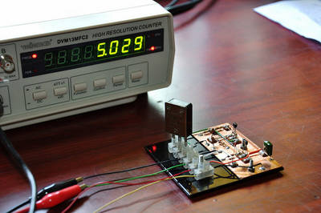

2016-05-05 - Nº 53

Editorial
Faz precisamente um ano que foi lançada a primeira Newsletter do altLab. É com grande alegria que vejo o Nº 53 a ser publicado correspondendo a uma edição semanal ininterrupta durante o ano. Muitas ideias, documentação, circuitos, software open-source, ferramentas, peças imprimíveis em 3D, Gadgets e projectos de maker foram aqui abordados. Foram mais de 100 eBooks divulgados, 35 circuitos, 17 softwares open-source, mais de 150 peças 3D e cerca de 1000 projectos de maker. Tudo isto suportado no Documenta! A Newsletter irá continuar e algumas novidades irão surgir no futuro que certamente vos iram agradar.
Esta é a Newsletter Nº 53 que se apresenta com o mesmo formato que as anteriores. Se gostar da Newsletter partilhe-a!
Todas as Newsletters encontram-se indexadas no link.
Esta Newsletter tem os seguintes tópicos:
Esta semana a Samsung e a Legrand formaram uma parceria na área do IoT para a interoperabilidade entre a plataforma Artik e a plataforma Eliot. A IBM disponibilizou para o publico o acesso à computação quântica. Cirurgiões e cientistas demonstraram a utilização de um robot numa operação de cirurgia num ser vivo.
Na Newsletter desta semana apresentamos diversos projetos de maker. Na rubrica "Documentação" apresentamos dez livros (eBooks) que podem ser descarregados livremente e que esta semana são sobre a temática do conhecimento aberto e das licenças usadas na publicação de documentos. Foi também publicada a revista newelectronics de 26 de Abril.
 João Alves ([email protected])
João Alves ([email protected])
O conteúdo da Newsletter encontra-se sob a licença  Creative Commons Attribution-NonCommercial-ShareAlike 4.0 International License.
Creative Commons Attribution-NonCommercial-ShareAlike 4.0 International License.
Novidades da Semana ^
Samsung and Legrand Team Up to Deliver World’s First Thread-Enabled IoT Light Switch
"Samsung Electronics and Legrand today showcased, at the Samsung Developer Conference in San Francisco, the world’s first Thread-enabled IoT light switch powered by the SAMSUNG ARTIK end-to-end platform. The SAMSUNG ARTIK IoT platform is a fully integrated chip to cloud solution, which helps companies like Legrand speed up their product development process, reduce time to market, and improve total cost of ownership for their IoT products. Additionally, the SAMSUNG ARTIK platform provides world-class security from device to hub to cloud to data management, while adhering to the fundamental protocols of the Thread standard."
IBM Makes Quantum Computing Available on IBM Cloud to Accelerate Innovation
"IBM scientists have built a quantum processor that users can access through a first-of-a-kind quantum computing platform delivered via the IBM Cloud onto any desktop or mobile device. IBM believes quantum computing is the future of computing and has the potential to solve certain problems that are impossible to solve on today’s supercomputers. The cloud-enabled quantum computing platform, called IBM Quantum Experience, will allow users to run algorithms and experiments on IBM’s quantum processor, work with the individual quantum bits (qubits), and explore tutorials and simulations around what might be possible with quantum computing."
-
"Surgeons and scientists from Sheikh Zayed Institute for Pediatric Surgical Innovation at Children's National Health System are the first to demonstrate that supervised, autonomous robotic soft tissue surgery on a live subject (in vivo) in an open surgical setting is feasible and outperforms standard clinical techniques in a dynamic clinical environment. The study, published today in Science Translational Medicine, reports the results of soft tissue surgeries conducted on both inanimate porcine tissue and living pigs using proprietary robotic surgical technology, Smart Tissue Autonomous Robot (STAR), developed at Children's National. This technology removes the surgeon's hands from the procedure, instead utilizing the surgeon as supervisor, with soft tissue suturing autonomously planned and performed by the STAR robotic system."
Outras notícias
- Infineon unveils 1200 V Silicon Carbide MOSFET technology for unprecedented efficiency and performance in power conversion designs
- Allegro MicroSystems, LLC Introduces New 1 MHz Bandwidth, Integrated Hall-Effect-Based Current Sensor IC
- Microchip Introduces Hardware Cryptography-Enabled 32-bit Microcontroller for Internet of Things Applications
- STMicroelectronics Brings Superior Indoor and Undercover Navigation to Mobiles and Wearables
Ciência e Tecnologia ^
IU physicist leads discovery of new particle: 'four-flavored' tetraquark
"Research led by Indiana University physicist Daria Zieminska has resulted in the first detection of a new form of elementary particle: the "four-flavored" tetraquark. Zieminska, a senior scientist in the IU Bloomington College of Arts and Sciences' Department of Physics, is a lead member of the team responsible for the particle's detection by the DZero Collaboration at the U.S. Department of Energy's Fermi National Laboratory, which announced the discovery Feb. 25. She also delivered the first scientific seminar on the particle and is an author on a paper submitted to Physics Review Letters, the premier journal in physics, describing the tetraquarks' observation."
Unexpected discovery leads to a better battery
"An unexpected discovery has led to a rechargeable battery that's as inexpensive as conventional car batteries, but has a much higher energy density. The new battery could become a cost-effective, environmentally friendly alternative for storing renewable energy and supporting the power grid. A team based at the Department of Energy's Pacific Northwest National Laboratory identified this energy storage gem after realizing the new battery works in a different way than they had assumed. The journal Nature Energy published a paper today that describes the battery."
-
"In the near future this device could provide a means of generating much needed electricity to remote areas at very little cost, each device costs just £1-£2. With growing global pressures to reduce reliance on fossil fuels and the associated greenhouse gas emissions, microbial fuel cells could be an exciting alternative. A microbial fuel cell is a device that uses natural biological processes of ‘electric’ bacteria to turn organic matter, such as urine, into electricity. These fuel cells are efficient and relatively cheap to run, and produce nearly zero waste compared to other methods of electricity generation. In practice, urine will pass through the microbial fuel cell for the reaction to happen. From here, electricity is generated by the bacteria which can then be stored or used to directly power electrical devices."
Prof. Kilwon Cho and Team Develop New Semiconducting Polymer for Forthcoming Flexible Electronics
"Polymer semiconductors, which can be processed on large-area and mechanically flexible substrates with low cost, are considered as one of the main components for future plastic electronics. However, they, especially n-type semiconducting polymers, currently lag behind inorganic counterparts in the charge carrier mobility – which characterizes how quickly charge carriers (electron) can move inside a semiconductor – and the chemical stability in ambient air. Recently, a joint research team, consisting of Prof. Kilwon Cho and Dr. Boseok Kang (Dept. of Chemical Engineering, POSTECH), and Prof. Yun-Hi Kim and Dr. Ran Kim (Dept. of Chemistry, Gyungsang National University), has developed a new n-type semiconducting polymer with superior electron mobility and oxidative stability. The research outcome was published in Journal of the American Chemical Society (JACS) as a cover article and highlighted by the editors in JACS Spotlights."
-
"If there’s such a thing as an experiment that goes too well, a recent effort in the lab of Stanford chemical engineering Professor Zhenan Bao might fit the bill. One of her team members, Cheng-Hui Li, wanted to test the stretchiness of a rubberlike type of plastic known as an elastomer that he had just synthesized. Such materials can normally be stretched two or three times their original length and spring back to original size. One common stress test involves stretching an elastomer beyond this point until it snaps. But Li, a visiting scholar from China, hit a snag: The clamping machine typically used to measure elasticity could only stretch about 45 inches. To find the breaking point of their one-inch sample, Li and another lab member had to hold opposing ends in their hands, standing further and further apart, eventually stretching a 1-inch polymer film to more than 100 inches."
No Worthless Battery After 200,000 Charges? Sign Me Up
"Your laptop's battery has been screaming to be replaced for months now, but that replacement isn't cheap. Which is why this new nanowire battery out of the University of California, Irvine, is so exciting. Batteries like the one in your phone are lithium-based, and over time, they hold less and less of a charge. That's why your once new 10-hour laptop battery may now only last two hours. Researchers were working on creating batteries with gold-coated nanowires, which are extremely thin and fragile but still highly conductive. But the problem with wires is they eventually break. The study's leader tried coating the nanowires in a thin plexiglass-like gel and started cycling them. A battery goes through one cycle each time it's drained and then fully recharged. It turns out the gel made the wires more flexible and helped them not break, even after hundreds of thousands of charges. Normally, the batteries found in personal electronics — or even in cars — will noticeably lose capacity after 5,000 to 7,000 cycles. This new battery, on the other hand, made it to 200,000 cycles. That's like 30 to 40 times more life without any signs of losing charge."
Documentação ^
A documentação é parte essencial do processo de aprendizagem e a Internet além de artigos interessantes de explorar também tem alguma documentação em formato PDF interessante de ler. Todos os links aqui apresentados são para conteúdo disponibilizado livremente pelo editor do livro.
Livros

Two Bits - The Cultural Significance of Free Software
"In Two Bits, Christopher M. Kelty investigates the history and cultural significance of Free Software, revealing the people and practices that have transformed not only software, but also music, film, science, and education."
Open Content - A Practical Guide to Using Creative Commons Licences
"Its intention is to provide interested individuals and organisations with practical guidelines for the use and application of open content licences: How do open content licences work? How do I choose the most suitable licence for my individual needs? Where can I find open content online? These are only some of the questions which these guidelines try to answer. Thanks to Dr. Till Kreutzer for writing these valuable guidelines."
Creative Commons: a user guide
"Here is an operational manual which guides creators step by step in the world of Creative Commons licenses, the most famous and popular licenses for free distribution of intellectual products. Without neglecting useful conceptual clarifications, the author goes into technical details of the tools offered by Creative Commons, thus making them also understandable for total neophytes. This is a fundamental book for all those who are interested in the opencontent and copyleft world."
The Digital Public Domain: Foundations for an Open Culture
"Digital technology has made culture more accessible than ever before. Texts, audio, pictures and video can easily be produced, disseminated, used and remixed using devices that are increasingly user-friendly and affordable. However, along with this technological democratization comes a paradoxical flipside: the norms regulating culture's use - copyright and related rights - have become increasingly restrictive. This book brings together essays by academics, librarians, entrepreneurs, activists and policy makers, who were all part of the EU-funded Communia project. Together the authors argue that the Public Domain - that is, the informational works owned by all of us, be that literature, music, the output of scientific research, educational material or public sector information - is fundamental to a healthy society. The essays range from more theoretical papers on the history of copyright and the Public Domain, to practical examples and case studies of recent projects that have engaged with the principles of Open Access and Creative Commons licensing. The book is essential reading for anyone interested in the current debate about copyright and the Internet. It opens up discussion and offers practical solutions to the difficult question of the regulation of culture at the digital age."
-
"Innovation is rapidly becoming democratized. Users, aided by improvements in computer and communications technology, increasingly can develop their own new products and services. These innovating users -- both individuals and firms -- often freely share their innovations with others, creating user-innovation communities and a rich intellectual commons. In Democratizing Innovation, Eric von Hippel looks closely at this emerging system of user-centered innovation. He explains why and when users find it profitable to develop new products and services for themselves, and why it often pays users to reveal their innovations freely for the use of all.The trend toward democratized innovation can be seen in software and information products -- most notably in the free and open-source software movement -- but also in physical products. Von Hippel's many examples of user innovation in action range from surgical equipment to surfboards to software security features. He shows that product and service development is concentrated among "lead users," who are ahead on marketplace trends and whose innovations are often commercially attractive."
-
"It has long been assumed that new product innovations are typically developed by product manufacturers, an assumption that has inevitably had a major impact on innovation-related research and activities ranging from how firms organize their research and development to how governments measure innovation. In this synthesis of his seminal research, von Hippel challenges that basic assumption and demonstrates that innovation occurs in different places in different industries. Presenting a series of studies showing that end-users, material suppliers, and others are the typical sources of innovation in some fields, von Hippel explores why this variation in the "functional" sources of innovation occurs and how it might be predicted. He also proposes and tests some implications of replacing a manufacturer-as-innovator assumption with a view of the innovation process as predictably distributed across users, manufacturers, and suppliers. Innovation, he argues, will take place where there is greatest economic benefit to the innovator."
The foundation for an open source city
"Explore the five elements of an open source city using Raleigh, North Carolina as a case study. See how the open source characteristics of collaboration, transparency, and participation are shaping the open government and open data movements. This book showcases the open source culture, government policies, and economic development happening in Raleigh and acts as a guide for other cities to pursue their open source city brand."
-
"The Internet revolution has come. Some say it has gone. What was responsible for its birth? Who is responsible for its demise? In The Future of Ideas, Lawrence Lessig explains how the Internet revolution has produced a counterrevolution of devastating power and effect. The explosion of innovation we have seen in the environment of the Internet was not conjured from some new, previously unimagined technological magic; instead, it came from an ideal as old as the nation. Creativity flourished there because the Internet protected an innovation commons. The Internet’s very design built a neutral platform upon which the widest range of creators could experiment. The legal architecture surrounding it protected this free space so that culture and information–the ideas of our era–could flow freely and inspire an unprecedented breadth of expression. But this structural design is changing–both legally and technically."
A Basic guide to open educational resources (OER)
"A basic guide to open educational resources (oer) and Guidelines for open educational resources in higher education are two slim volumes that provide a detailed, succinct and immensely valuable overview of oer policy and practice that should be useful across all sectors of education, from schools to universities."
The Battle for Open - How openness won and why it doesn't feel like victory
"With the success of open access publishing, Massive open online courses (MOOCs) and open education practices, the open approach to education has moved from the periphery to the mainstream. This marks a moment of victory for the open education movement, but at the same time the real battle for the direction of openness begins. As with the green movement, openness now has a market value and is subject to new tensions, such as venture capitalists funding MOOC companies. This is a crucial time for determining the future direction of open education. In this volume, Martin Weller examines four key areas that have been central to the developments within open education: open access, MOOCs, open education resources and open scholarship. Exploring the tensions within these key arenas, he argues that ownership over the future direction of openness is significant to all those with an interest in education."
Revistas
-
"New Electronics is a fortnightly magazine focusing on technological innovation, news and the latest developments in the electronics sector. Downloadable as a digital page turner or pdf file, or offered as a hard copy, the New Electronics magazine is available in a format to suit you."
Modelos 3D ^
Com a disponibilidade de ferramentas que permitem dar azo a nossa imaginação na criação de peças 3D e espaços como o thingiverse para as publicar, esta rubrica apresenta alguns modelos selecionados que poderão ser úteis.
smd & small parts drawers (customizable)
I love keeping my electronic components neatly organized so I can find them when I need them. When I have a jumble of bags of parts I forget what I have and it's a constant waste of time weeding through everything.
I've been meaning to modify the old drawer box for a while now to add more tiny drawer slots to efficiently hold very small components like smd parts, ceramic caps, and tiny screws. I modified the model to support 5x2 slots in a drawer and also made the divider wall between the slots thinner.
I recently received a batch of ceramic caps divided into 50 different values. 10 slots per drawer worked out perfectly for the size of ceramic caps I have.
Currently there is a bug rendering when I try to make the number of rows 3 or greater and I get the following message: WARNING: Normalized tree is growing past 200000 elements. Aborting normalization.
Enjoy and please share any pics and comments about organizing ideas for your own small parts.
Customizable miter
Don't print in PLA, the thing will break.
UnoPCB - Arduino Uno ProtoShield Circuit Board Breadboard
Genuino / Arduino Uno ProtoShield - Circuit Board
Printable circuit board for your Arduino Uno project. If you don't have pin connectors you can connect the shield to Arduino with cable (that's why I'm design this shield). There is a special .stl file with cable mount. When soldering be careful so that the plastic does not melt. I attached a paper with front face and back side of this board to design you shield by pen.
http://www.thingiverse.com/apps/customizer/run?thing_id=1534620 You can customize your board (shield height, grid size, cable holder, ...).
Projetos Maker ^
Diversos Projetos interessantes.
-
"This is a project I made for weekend house, which is small but on two floors. It is quite unhandy to go up and down just to see temperature in every room, so I had to do something. So this project is result of my pure lazyness :-) Two indoor sensors and one outside, with LCD for read out and WiFi access point and HTTP output for read out when I'm on "wrong" floor."
nRF51822 Begins - nRF-DK, GCC, ADC, UART/BLE
"The nRF51822 is a very popular SoC (System on a Chip) which integrates BLE (Bluetooth Low Energy) with an ARM Cortex M0 CPU. For folks like myself trudging along in 8-bit AVR country, 32-bit ARM development is unfamiliar territory. The chips are powerful, complex beasts, and the hardware and software infrastucture required to program them are tortuous and often absurdly priced. For nRF51822, you have the burden of understanding the BLE jargon as well. To clear the fog in my head, I wanted to create a simple project using nRF51822 that reads light levels from an LDR and sends the data over BLE. In the process, I set up the development environment on Windows and OS X. Hopefully this will serve as a useful guide for you to get started on this chip."
-
"This instructable is based on the Super Game Pi by Adafruit. While it is similar to the super game pi, my hybrid system is different than any I have seen by being primarily a raspbian pc + the option of running retropie with integrated gaming controls. I will go through the steps for how I designed and built this unit."
555 Based Motion Sensing Night Lamp Kit
"This is a short note on my attempt in 2013 to create an electronics kit meant for kids - a DIY motion sensing night lamp based on the good old 555. Although I gave up on the project before I got to the final manufacturing stage, it was an educational experience for me."
-
"The nice thing about the Internet of Things is that it can take care of a whole lot of things online. All you need to do is whip out your phone, tablet, laptop or whatever, connect to the server and it can give you all the information about all your sensors you want. This, however requires you to whip out your laptop or phone and actively start an app or load a webpage. What if all you want is to take a quick look to see if the room indeed is as cold as you feel it is? I had a problem like this. For longer-term things, like the weather predictions and the outside air quality, my electronic ink display still worked like a charm. For quicker changing things, like the name of the music that's playing or maybe even the current time, it was too slow. I needed a display that could react quicker to show the more dynamic bits of information I was interested in."
-
"Keep your "eye" on the weather. There are few areas in everyday life that suffer from data overload quite like the weather. All you want to know is, "what's it like outside right now?" Instead of a nice simple answer, you are deluged with more data points that you can sling a psychrometer at: dew points, inches of mercury (mercury!!), humidity, wind speed, and, of course, temperature. My kids don't want to know any of that "techie stuff," they just want to know is it "nice, hot, or cold" outside...right now."
Making an LED Night Light W/ Star Pattern
"This LED nightlight features a star pattern and it lights up a dark room in a magical way. I used ipe for the wood, however any dark wood, or painted MDF for example would work well. This is a really fun project and would be great as an accent light in a room, in the middle of a table, or as a night light in the bedroom."
-
"This Instructable will demonstrate how to make a wearable, mobile earpiece thermometer. This thermometer will use an infrared temperature sensor, and relies on tympanic radiation to acquired temperature readings. These readings will be able to be stored using an SD card. By storing the readings, you will be able to monitor your body temperature over a 24-hour timespan. Additionally, a detachable LCD shield can be incorporated into this device, to obtain temperature readings at any time."
110v Temperature Controlled Soldering Station Build No. 2
"This post is the second example of how to make a 110 volt temperature controlled soldering station. Please refer to the previous post for information on materials used, their costs and where they can be obtained. The steps for modifying the soldering iron are very similar to the previous post but a few things are different for this version."
Analyze Any IR Protocol With Just You Arduino Board
"Recently, I was in deep research on how to make our own "Self Learning Universal Remote". So when I searched for the procedure of making this, first step I found is analyzing IR protocol,its frequency (time period),and also the combination of High and Low pulse for making a particular carrier frequency. And for measuring all these parameters, all the people either used DSO or some other hardware and software analyzer. But I didn't have any hardware or software for protocol analyzing except my Arduino MEGA board. Yeah!!!, now you can measure all the parameters of IR remote by your Arduino board only."
-
"Joule thief is a minimalist Armstrong, self-oscillating voltage booster that is small, low-cost, and easy to build, no needs many materials to make it. I made this because i need to power up something in emergency situations. It can kept in a pocket, bag, and any places. This Joule thief can powering the 12volts LED with one botton cell battery! Its amazing! You can powering up any DC device with this, like Radio, Remote control, LED, Motor, and ANYTHING!"
Ultrasonic Obstacle-avoiding Robot
"This is my attempt at designing and building an obstacle avoiding robot! RekaBot (named after a fairy (: ) can detect obstacles with an ultrasonic sensor that can move around with help from a servo. Based on the measurements she takes, the tracks are driven towards the direction with the biggest distance - avoiding obstacles."
-
"We built a prototype of a fluid tracking sensor application. The prototype has three components: 1. A Tabletop sensor that tracks the weight of a bottle of water in grams and sends the data to the Intel Analytics cloud; 2. A portable sensor that also tracks the weight of a bottle of water in grams while it is in a sleeve; The tabletop sensor uses the Intel Edison Dev Kit with HX711 weight sensor. The portable sensor uses the HX711 weight sensor with a SparkFun kit with the Edison chip."
-
"Hi its my first instructable in here so please be kind to me. is saw this DIY video on YouTube from a Chanel called MDF RESCUER"
16x128 display showing Date, Time, Temp, Humidity
"I am using 2 - 16x64 dot matrix display, 1 - RTCDS3231, 1 - DHT22 Temp Sensor and an Arduino Uno. I have had these 2 16x64 displays for a while with no real code to run or do what I wanted. I recently found a piece of code by Phil Kaziewicz and it was a great starting point for this project."
-
"I designed this shield to control mutiple servos. I added 2 jumpers to select external power for heavy servos or 5 V from the arduino."
-
"Now that I have a few OSI 495 prototype boards on-hand, I could finally build a combined static RAM board for the Challenger III using modern static RAM devices. Finally, no more reseating a ton of SEMI4200s every time the Challenger was moved onto or off of the workbench! I decided to start with a 32K design, but design in such a way that it could be expanded to 64K and beyond without too much trouble. This 32K RAM board design is suitable for anyone who needs to add to the base memory on a smaller Ohio Scientific system. It has been designed such that the board resides from 0 - 32K in address space (0x0000 to 0x7FFF). Each 4K segment in that range can be independently enabled or disabled this allows one to retain small chunks of original system memory without having to disable it or alter the RAM board to prevent address conflicts. For exmaple, if youre expanding a system based around the 500 CPU board, which has already been expanded to 4K RAM for BASIC, you can disable the bottom 4K on this design with a simple DIP switch setting."
Arduino Soil Probe using DS18B20 and DIY Moisture Hardware
"As a fanatical gardener or a professional farmer, knowing the environmental conditions of our soil is invaluable. Obviously, we can't measure the number of worms or pieces of organic humus, but we can measure temperature and moisture content really easily. This is not a difficult project and what you end up with is a very swanky looking bit of kit that will impress most people until you put it in the soil and it gets completely covered in dirty, sticky mud!"
Fish Feeder Arduino Raspberry Pi Link
"My aquarium is a Juwel Rekord 800 and has a Juwel feeding machine. I bought the machine to be able to feed my fish on regular times when I'm not around. It's a great machine, but as an engineer I see some room for improvement."
Control AC light using Arduino
"The first tutorial everyone suggest in arduino is Blinking a LED. Today I will show you how to control a AC light/appliance with the same Blink sketchControlling AC light or appliance with arduino is simple as blinking a LED using arduino. All you need to is take proper care while doing this project because here we are dealing with AC current (230V is more than enough to kill you)."
Maze Solver Robot, using Artificial Intelligence with Arduino
"This Instructable was developed upon my last project: Line Follower Robot - PID Control - Android Setup. Once you have a robot with line following capabilities, the next natural step is to give him some degree of intelligence. So, our dear "Rex, the Robot" will try find how to scape from a "labyrinth" on a shortest and fastest way (by the way, he hates the Minotaurus ;-)."
-
"This wifi relay can controls any device like lamps or your soldering station with your smartphone or your computer."
-
"This was a project for one of my college courses. I decided to make an OBD II reader that will allow me to connect to the car computer and access different values! This project has the original code posted here.... http://www.instructables.com/id/Hack-an-ELM327-Cable-to-make-an-Arduino-OBD2-Scann/ I worked with this code using the different lines of code to represent the different engine readings."
3W Stereo Audio Amplifier using TDA7266D
"Tiny stereo audio amplifier board has been designed around SMD TDA7266D IC from ST. The TDA7266D is a dual bridge amplifier specially designed for Portable Audio, LCD TV/Monitor, PC Motherboard, and TV applications. This circuit provides high quality audio output of 3W approx. on each channel with standard audio signal input. The circuit works with 3.5V to 5V. Due to low supply input this amplifier is suitable for small size audio gadgets and portable audio applications like MP3 player, Voice messaging system, Warning signals, Annunciator etc."
-
"Over the past month or so I built an ESP-8266 based "Solar Swiss Army Knife". It's primary purpose is to measure the soil moisture, and turn on a valve to water my garden when the soil is dry. Since it's solar powered, the only connection needed is to the garden hose."
-
"The Butt Light (yeah I know, corny), is about the most elementary piece of hardware to introduce yourself, your kids and everyone else to the wonderful world of micro-controllers. The entire project has no input and only one output: an RGB LED. The few parts are all glued on a button cell clip. You can make surprisingly creative little gems with this ultra-simple device. Flashing, fading, dices, memory games. You can slowly move from extremely simple scripts to more complex firmware."
DICE - a tiny, rigid and superfast 3D-printer
"I already own a printer with a big buildvolume (bigger than 30x30x30cm) and because of the size, it needs a lot of energy and is rather slow. That's why, I started to plan a smaller printer back in october 2015. It was clear right from the start, that the new printer had to be small, precise and fast. Side effects of this would come automatically: less energy-consumption and easier handling in moving this printer around."
-
"PiScope is an open source project to do basic astrophotography using a RaspberryPi, Arduino, 3d-printed parts, and a telescope. When it is done we hope to have autotracking via OpenCV working and at the moment can use a keyboard to jog the telescope view, take photos, take videos, and stream images to a laptop via a wifi hotspot. It also has a neat little screen where everyone can see the eyepiece view. This is quite handy for star parties. Lots of people pitched in to make this happen and was quite a fun project to work on some woodwork, 3d design, printing, electronics, software all mixed together to make this work."
Make a Hydroelectric Power Light
"Recently I received a hydroelectric, use it to make a SAVE WATER remind, just for fun"
4WD Robot Controlled by Android , Detect hurdles
"A 4WD Robot Controlled By Android Bluetooth API. Detect Hurdles Using HC SR-04. Using Bluetooth Module HC05 Slave device"
Raspberry Pi Controlled Irrigation System
"Every spring my wife gets really ambitious and plants a big vegetable garden. As the summer drags on, ambition turns to laziness and unfortunately many of the plants die a slow, withering death from neglect due to lack of weeding and watering (except for the tomato plants, which grow like mutants in our climate even if you neglect them...so every August we wind up with 10,000 tomatoes and no other vegetables)."
-

"If youre like me, you don like buying stuff thats ready-to-go, but rather build one yourself. We usually spend more money, but its way more satisfying I really didnt want to buy an overly expensive FPV LCD receiver, so I made my own DIY 32ch FPV 5.8ghz LCD, that is compatible with EVERY transmitter on the market now."
-
"This Instructable teaches you how to make the useless box. Good luck and have fun!!!"
Smart Humidifier (make Your Room Comfortable)
"There are three key components to healthy air. It must be fresh, clean, and have the proper humidity. Humans are sensitive to humidity because the human body uses evaporative cooling, enabled by perspiration, as the primary mechanism to rid itself of waste heat. Humans can be comfortable within a wide range of humidity depending on the temperaturefrom thirty to seventy percent but ideally between 50% and 60%. Very low humidity can create discomfort, respiratory problems, and aggravate allergies in some individuals. In the winter, it is advisable to maintain relative humidity at 30 percent or above. Extremely low (below 20%) relative humidity may also cause eye irritation. Humidify your home, especially the bedrooms. Low humidity is a common cause of nosebleeds. The right humidity levels help your home to feel cool in the summer and warm in the winter. In the winter, or in regions that tend to be cold for most of the year, humidification, or adding moisture, is essential. This project sense temperature & humidity from your room or environment and check either it is in comfortable range or not. If it finds that relative humidity is lower than the required limit, it turns on the humidifier for 10 seconds, then again checks the humidity level. If not adequate then again turns on. Seeed studio HSM-20G temperature & humidity sensor is used here to sense the temperature and humidity. A LCD display is used to show the temperature and humidity level on your room. You can use Grove button to manually control the humidifier. To control all the things Arduino UNO is used."
Android Controlled RGB LED Using Arduino
"Hai to everyone in the post iam going show how to control the RGB LED using android with arduino and HC-05 Bluetooth module. I searched in web there is lot of techniques to control the RGB LED. But this is the method which is very simple and easy. In this method the color of LED is controlled by using the android application which is freeware you can download it from google play store.(sorry for windows and ios users)"
-
"In this ible, I use a washable battery pack and some LEDs to sew a soft circuit into cuff for riding your bike at night."
Android Controlled Robot for Beginners (A to Z)

"Do you like Robots? Are you new in Robotics? Do you thinking to build a Robot from scratch? If yes, this instructables is for you. In this instructables I will show you how you can build a robot from scratch, I also show you how you can control you robot using your Android phone. I will guide you to build an android application to control your robot via bluetooth. Don't worried, you don't need any programming experience to build android app because I will use MIT App Inventor to build an android app."
-
"so i had been looking into making a timelapse video with my dslr and had seen many using a slider mechanism to add another dimension. I looked at buying one but they are a little expensive to buy just to "dip ones toes into the water" so to speak. i had a lot of the bits from an arduino starter kit i had bought so i decided to attempt to make one."
$1 automatic water level controller
"Its an automatic switching circuit that used to control an AC water pump. Operation of this circuit is simple.wen the water level goes below the limit the lower level sensor will detect it and activate the water pump.wen the water level reaches the upper limit the upper limit sensor detect it and switch of the water pump."
Made Clock Matrix With 192 LED
"how to make clock dotmatrix without dot matrix?? i make this from 192 pcs led then conection with matrix system"
-

"I have previously worked with Arduino boards to develop a motion based mobile alerts. But always wanted to work with Raspberry Pi because of the diversified projects that could be done relatively easily because it is a full blown mini computer running on Debian based Linux. Then I remembered looking for a Car Dash cam a couple of years ago, but never bought one as they didn't feature all the requirements that I had in mind. The timing was perfect as I was already trying to explore Raspberry Pi and this use case made perfect sense to me to play around. Luckily for me they released RaspBerry Pi 3 model very recently, so went for it."
Fenrir: An Open source dog robot
"This is a mini open source mammal quadruped robot or you can think of it as a four leg dog robot . The aim of this project is to give people the ability to create and study 4 legged mammal robot such as the Boston Dynamics LS3 or the MIT Cheetah on a smaller scale. All parts of the robot can be easily 3D printed on a low cost 3D printer such the M3D(This is what I use to produce the parts ). If you don't have a 3D printer you can send them to print on online site such as Shapeways or get access to a Tech Shop that had 3D printer."
Weather box using arduino ~the easiest
"The DHT11 is a basic, ultra low-cost digital temperature and humidity sensor. It uses a capacitive humidity sensor and a thermistor to measure the surrounding air, and spits out a digital signal on the data pin (no analog input pins needed). Its fairly simple to use, but requires careful timing to grab data. The only real downside of this sensor is you can only get new data from it once every 2 seconds, so when using our library, sensor readings can be up to 2 seconds old.WEATHER BOX uses a DHT11 Temperature Humidity Sensor to know the weather outside You!"
1 Wire LCD Controller for Arduino

"Whilst working on an ATtiny project I found I was lacking the required number of pins and needed to attach an LCD with just 1 wire. I had found a Instructable on how to use a shift register to control the LCD using only 3 wires, but once again this was too many pins, and the hacks to make it work with 2 wires was still too many pins. Enter the 1 Wire LCD Controller, this simple controller basically uses a ATtiny85 and a 74HC595 (the previous mentioned 3 wire solution) and allows for 1 wire serial communication, using serial communication we can also keep the code small and simple for any devices needing to control the LCD."
-
"This is my first project for my Interactive Design class where I play upon the Light Up Disco Table decoration by turning it into a prototype for an Interactive game using a Hall Sensor as the trigger. This is my first project overall dealing with electronics, and turning it into a form of decoration or art and was frustrating but inspiring to say the least in continuing with using electronics to create art and my own decorations in general. Follow along and I'll show you how to make your own 'Decorative LED Tabletop'."
Selfmade continiously adjustable step up power supply
"When you are working outdoors and don't have a generator a 12V battery like the one you have in your car is a good power supply. But sometimes 12V just don't cut it. For this I put this step up converter together. It can take any voltage from 10V to 32V and convert it into a higher voltage up to 35V. With this you can charge your 14V cordless drill, your 19V laptop or a 16V LED lamp. You can also buy those things for around 20 but I wanted to have one that enables me to continuously adjust the voltage and through the two built in voltmeters and an amperemeter I can also monitore the power consumption and the condition of my battery."
Aquarium Auto Refill With Arduino
"This Arduino Pump Tutorial shows a simple example of how to use a float switch and RobotGeek Pumping Station to refill a reservoir once the level gets too low. For our example we use a small aquarium, but this same project could be used for pet dishes, water fountains, or any other number of similar applications. The Pumping Station is a RobotGeek kit which packages a small liquid pump and relay. To operate a pump using an Arduino microcontroller you need a relay to switch on and off a separate power supply."
Bringing a vintage telegraph into the digital age
"I recently inherited a key on board (KOB) telegraph that my late grandfather used to practice Morse code with when he was a kid (Figure 1). A little bit of curiosity of how it would work and a little bit of displeasure from seeing it sit and collect dust, I began a journey to resurrect the old machine and develop some software to bring it into the digital age. If youre eager to see the final result, or just dont want to read, skip to the end for a video demonstration."
-
"This Instructables show how to build a IoT pill bottle prototype. This is my colleague, Roy's idea, I just help him PoC."
-
"With this small project I would like to demonstrate how you can do the Arduino (or other mcu) turn off itself via software. I am not refering about a "Deep Sleep Mode" of the mcu, but cutting off the circuit power totally. Thinking of applications, we can imagine for example, a process of "Time Out" where when detecting inactivity on the device, it turns off completely. Or a button that once pressed, turns on the circuit, and turns itself off as soon as a task is completed. "
-

"This is simple Colpitts oscillator to test commonly available passive crystals which range between 2MHz to 27MHz. This unit must connect to an oscilloscope and/or frequency counter to get the frequency of the crystal. This circuit is design to work around 9V to 12V DC power source. Both 2SC930 transistors can replace with any high speed NPN transistor such as 2SC829, 2SC933, etc. In our lab we use Manhattan style layout to prototype this crystal tester and it produces highly accurate results with above specified frequency range. According to our observations, after 27MHz, amplitude of the waveform starts to decrease steeply."
-
"As manufacturing electronics became much cheaper, more technologies are more accessible for makers, enabling us to be able to create anything we would like. One of the things I am more passionate about is laser engraving. I made a little research before I decided which technology I would like to use, that will be both affordable and high-end. In this instructable I'll give you all the information I have gathered, along with instructions about how to laser engrave by yourself and create anything you'd like with it."
7 Segment Display Internet Clock
"When I saw these 7 segment displays with FeatherWing backpacks on Ask an Engineer, I got really excited. I love clocks! I have the original Ice Tube clock from Adafruit, plus the PiGlow daughter card binary clock, plus my collection of watches (including a programmable TI digital watch that I've re-programmed to display Martian Standard Time and the current Sol). So the thought of having a mobile clock with a colored display made me immediately run to the shop and buy three colors (and a Circuit Playground, but that's for another tutorial). This clock design uses NTP (Network Time Protocol) to always display the accurate time, synchronized to the same clocks that run the Internet!"
Warm/Cold Adjustable Continuous Lighting
"This is a continuous light panel that is adjustable between warm/white and cold/white leds independently to get that exact right color you want."
-
"Since its my first project after the 15 tutorials of my Arduino starter kit, the real purpose of it is to get some critics, tips, suggestions, ideas from anyone who knows more than me. This project is about a robotic arm, with 4 dofs and a grip. With a decently low budget: the structure has been cut by a friend, the 4 servos were 30, the 2 joysticks 4, bolts screw etc. for less than 10 and all the rest (Arduino, wires, grips servo etc.) was already included in my starter kit. For a total of 40-45 which are about 45-50 US dollars (the same price of a me-arm kit, but hey, it was fun to have to build it by myself (and mess something up once in a while) and not following instructions like a machine)."
DIY PCB 4 channel IR remote controller
"in this posting, i can share PCB 4 channel remote controlled with IR sensor, using atmega 328, programmed with arduino uno R3."
Transform an Ikea Side Table into a Music Visualizer

"Heres a table I bought from Ikea and inserted loads of LEDs, electronics, and a microphone into, so I can put it next to the stereo and have a display that reacts and dances to the music played. Its great for parties, and it makes a superb conversation piece. Its got an Arduino for a brain and uses a minimal amount of current, so you can run it off an iPad charger or any USB port thats handy."
-
"Live the arcade experience with your own games at home. This table top arcade center will be made with wood, and will be complete with a built in screen and computer, speakers, joystick and buttons that will allow the user to play games on Scratch (like Pacman or Astroids) or other games anywhere that single power source is available."
Build your own 3d printer filament factory
"3D printers are cool and they finally start to drop in price. Kickstarter campaigns like the one from QB-UP or M3D are popping up and they are finally "affordable". And with affordable I mean affordable like 200 $ and not "affordable" like 2.199$ affordable. However, once you are a proud owner of a 3D printer you will soon realize that your wallet is far from being let alone. No ! You need plastic filament of course to print those super awesome coat hooks and wheel chocks. Since the price for these filaments tend to top the actual material costs, printing before mentioned life savers is kind of expensive and could become a problem to the development of the ever growing 3D printer community"
Raspberry Pi Garage Door Opener
"This instructable explains how I setup a Raspberry Pi to open my garage door using a smarthphone. While this has been done before, I thought I'd post my solution. This was my first hardware project and instructable ever and I'm sure I made some mistakes. So, when you find one let me know! "
PYMON A SIMON CLONE FOR THE RASPBERRY PI
"Recently CPC had a great time at Makerfaire UK and we took along a few games for the public to play. One of those games was a clone of the popular 80s game SIMON."
That's all Folks!